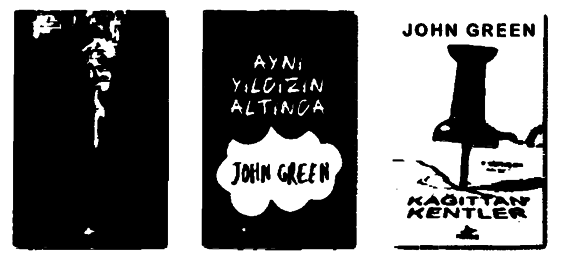
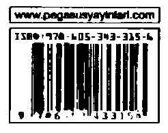

V. Katherine erkeklerin iğrenç olduğunu düşünüyordu
X. Katherine sadece arkadaş olmak istedi
XVIII. Katherine onu bir epostayla terk etti
K19 kalbini kırdı
Konu ilişkiler oldu mu, Colin Singleton’ın tipi Katherine isimli kızlar... Ve konu Katherine isimli kızlar oldu mu, Colin her seferinde terk ediliyor. Tam sayı vermek gerekirse, on dokuz kere.
Bir yol macerasına atılan, evden kilometrelerce uzaktaki bu anagram âşığı, hali harap, üstün zekâlı gencin cebinde on bin dolar, peşinde kana susamış bir yaban domuzu ve hemen yanında televizyon bağımlısı, şişman dostu vardır... Ama bir tane bile Katherine yoktur.
Yarattığı formülle tüm romantik ilişkilerin geleceğini hesaplamayı uman Colin, Katherine Öngörülebilirliği Teoremi’ni ispatlamak için debelenmekte, tüm Terk Edilenler’in öcünü almanın ve sonunda kızı kapmanın peşindedir.
Aşk, dostluk ve ölü bir AvusturyaMacaristan arşidükü, insanın kendisini yeniden keşfetmesini konu alan bu çok katmanlı romana şaşırtıcı bir son ve sıcacık bir yön katıyor.
“Green, bıçak gibi keskin ve zekâ dolu bir başka öykü daha kaleme almış. Komik sayfalarda karşımıza kâh müthiş keyif veren toy ve gösterişçi karakterler, kâh entelektüel bir üslup çıkıyor.”
Booklist

